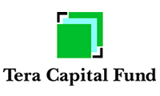
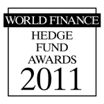

|  |

Most Innovative Fund
of Funds in the World
|
World Finance (www.worldfinance.com) announced it awarded Tera Capital Fund one of the world‘s most coveted awards: the Most Innovative Fund of Funds in 2010. The award is based on two primary criteria: innovation and performance. A video of the award given at the London Stock Exchange and interview with Mr. Enneking, one of Tera‘s founders, can be seen here: http://www.worldfinance.tv/#/investment/enneking-2011. The award follows hard on the heels of Tera finishing 2010 as the number 2 ranked fund of funds in world by Eurekahedge (out of 2,512 FoFs) with performance of almost 25% -- outperforming every Russian stock market index and over 80% of Russian funds.
Altima Asset Management maintains the largest and most comprehensive data base of Russian-focused and Russian-based funds in the world, with over 900: more than Bloomberg, Morningstar, Eurekahedge or any other rating or tracking organization. This allows Tera to select the absolute best and most professional funds and maximize returns while minimizing risk. Tera was ranked number 2 among 2,512 funds of funds worldwide in terms of performance for 2010. For 2009, Tera was ranked number 8 in the world in terms of annual performance; for 2005, Tera was ranked number 1 in the world. Tera is also a finalist for the award as the "Most Innovative Fund of Funds in Europe" for July 2009-June 2010 period by Hedge Funds Review.
|
|
||||||||||||||||||||||||||||||||
| World Finance award and interview with Mr. Enneking Tim Enneking on investing in Russia today |
||||||||||||||||||||||||||||||||
Wall Street Transcript interview of Mr. Enneking | ||||||||||||||||||||||||||||||||
October 2010 presentation by Mr. Enneking to the US Chartered Financial Advisors Society |
|
|

|
|